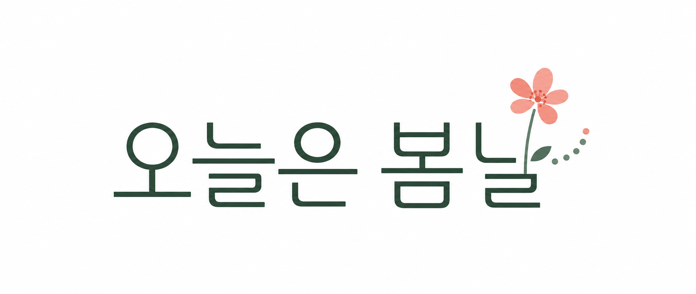

현장 QR로 들어와 바로 참여하는 페이지를 만듭니다.
공공사업 홍보, 시민 설문, 프로그램 모집, 병원 예약, 보험 이벤트처럼 목적이 다른 페이지를 같은 틀로 찍어내지 않고 운영 흐름에 맞춰 제작합니다. 모든 레퍼런스는 실제 납품 사례가 아닌 제안용 샘플입니다.

대구 여성기업 · 공공예술 콘텐츠대구의 하늘을 읽는 중
대구의 오늘 날씨와 현재 시간이 시침, 초침, 꽃잎의 궤도를 바꿉니다.
Daegu Women-led Public Art Studio
지자체, 공공기관, 문화재단, 병원, 보험사 프로젝트를 위한 랜딩페이지와 데이터 기반 미디어아트를 제작합니다. 27개월 아이를 키우는 엄마의 시선으로 시민이 읽기 쉬운 안내와 안전한 참여 흐름을 설계하고, 공공 API·QR·설문 데이터를 연결해 결과 보고까지 이어지는 구조를 만듭니다.
Landing Reference
행사 소개, 설문, 신청접수, 예약, 참여 인증, 사은품 수령까지 목적별로 다른 샘플을 제공합니다.
공공사업 홍보, 시민 설문, 프로그램 모집, 병원 예약, 보험 이벤트처럼 목적이 다른 페이지를 같은 틀로 찍어내지 않고 운영 흐름에 맞춰 제작합니다. 모든 레퍼런스는 실제 납품 사례가 아닌 제안용 샘플입니다.
일정, 장소, 참여 방법, 프로그램 정보를 모바일에서 빠르게 읽히게 정리합니다.
현장 QR 설문, 만족도 조사, 참여자 모집, 시간대 예약을 받을 수 있습니다.
응답 데이터, 참여자 명단, 사은품 수령 내역을 보고용 표로 정리합니다.
LED 화면이나 미디어월에 QR을 넣어 작품 감상 후 참여 페이지로 연결합니다.
Media Art Works
공공데이터를 빛, 꽃, 움직임으로 바꾸는 LED·사이니지·미디어월용 작품 예시입니다.
대구의 오늘 날씨와 현재 시각에 따라 시침, 초침, 꽃잎, 빛의 궤도가 달라지는 실시간 미디어아트입니다.
대구 미세먼지 API를 연결해 아이들이 공원에서 야외활동을 해도 되는지 빛의 색으로 보여줍니다.
오늘 온도를 꽃의 크기, 색온도, 정원의 호흡 리듬으로 시각화하는 자연형 미디어월 작품입니다.
기상 정보를 활용해 오늘 비가 올지 안 올지 꽃비의 밀도와 하늘의 밝기로 보여주는 작품입니다.
| 작품 | 연결 데이터 | 시민에게 보여주는 판단 | 적용 공간 | 설치 장비 |
|---|---|---|---|---|
| 오늘은 봄날 | 대구 날씨, 바람, 구름, 강수 | 오늘의 하늘과 현재 시각을 시침, 초침, 꽃잎, 빛의 움직임으로 표현 | 공공청사 로비, 미디어월, 야외 LED | 현장 송출용 미니 PC 권장 |
| 빛의 산책로 | 대구 미세먼지 API, 초미세먼지 지수 | 아이들이 공원에서 야외활동을 해도 되는지 색과 신호로 안내 | 공원, 학교 앞, 어린이 체험 공간 | 미니 PC 권장, 네트워크 연결 필요 |
| 숨 쉬는 정원 | 오늘 온도, 체감온도, 시간대별 변화 | 따뜻함과 추위를 꽃의 크기, 색온도, 호흡 속도로 시각화 | 도서관, 병원, 복지관, 웰니스 공간 | 4K 장시간 운영은 미니 PC 권장 |
| 도시의 꽃비 | 강수 확률, 강수량, 기상 예보 | 오늘 비가 올지 안 올지를 꽃비의 밀도와 하늘 변화로 표현 | 축제 미디어파사드, 광장, 관광 안내 공간 | 미니 PC 송출, 프로젝션/LED 현장 테스트 권장 |
Data-driven Proposal Tabs
공공기관이 보유하거나 공개 API로 연결할 수 있는 데이터를 작품의 조건으로 사용합니다. 각 제안은 LED, 사이니지, 미디어월, 키오스크 화면에 맞춰 커스텀 제작 가능합니다.
기온, 강수확률, 풍속, 하늘 상태를 꽃잎의 속도와 빛의 온도로 바꿉니다. 로비나 관광안내소에서 오늘의 도시 분위기를 직관적으로 보여줄 수 있습니다.
미세먼지, 초미세먼지, 오존, 체감온도를 조합해 아이들이 밖에서 놀아도 되는지 색과 움직임으로 안내합니다. 엄마의 시선이 가장 잘 드러나는 제안입니다.
하천 수위, 강수량, 홍수주의 정보를 물결의 높이와 속도로 표현합니다. 안전 안내와 감성적 도시 경관을 함께 만들 수 있습니다.
버스 도착, 보행량, 혼잡도 데이터를 선과 점의 흐름으로 시각화합니다. 대기 공간에서 도시가 움직이는 감각을 보여주는 사이니지로 제안할 수 있습니다.
공공청사의 태양광 발전량, 전력 사용량, 탄소 절감량을 꽃의 개화와 빛의 밝기로 보여줍니다. ESG 캠페인과 함께 운영하기 좋습니다.
현장 QR 참여, 설문 응답, 스탬프 인증 데이터를 꽃의 개화 수와 빛의 밀도로 바꿉니다. 작품 감상과 참여 페이지를 하나로 연결합니다.
Company Profile
대구 여성기업 오늘은 봄날은 공공기관용 랜딩페이지와 데이터 기반 미디어아트를 함께 제작합니다.
날씨, 미세먼지, 안전한 외출처럼 매일 확인하는 생활의 감각을 공공 데이터와 연결합니다. 시민이 이해하기 쉬운 화면, 담당자가 운영하기 쉬운 구조, 결과 보고까지 고려한 콘텐츠를 만듭니다.
날씨, 미세먼지, 교통, 수위, 행사 참여 데이터 등 다양한 API 조건에 따라 화면 결과가 달라지는 콘텐츠를 제작합니다.
공공청사, 도서관, 축제장, 야외 LED, 실내 미디어월에 맞춰 화면 비율과 운영 환경을 설계합니다.
작품 화면 안의 QR을 통해 랜딩페이지, 설문, 이벤트, 사은품 수령, 신청접수 페이지로 연결합니다.
기획 의도, 장비 조건, 운영 방식, 결과 데이터 정리까지 공공사업 보고에 필요한 흐름을 준비합니다.
Contact
오늘은 봄날은 대구를 기반으로 공공예술 인터랙티브 콘텐츠, 미디어파사드, 키오스크형 체험 콘텐츠를 커스텀 제작합니다.
Inquiry Form
기관명, 사업영역, 예산 범위만 남겨주시면 검토 후 연락드립니다.
Business Credentials
발급번호 제0113-2025-35456호. 유효기간 2025년 11월 07일부터 2028년 11월 06일까지.
신고번호 제2025-000019호. 동영상 제작, 홍보영상 제작, 영상촬영 제작품목 신고.
신고번호 제12235호. 방송영상물 제작 및 공급 업종으로 신고.
지자체, 공공기관, 문화재단 프로젝트에 맞춰 제안, 제작, 설치, 운영 문서를 준비합니다.